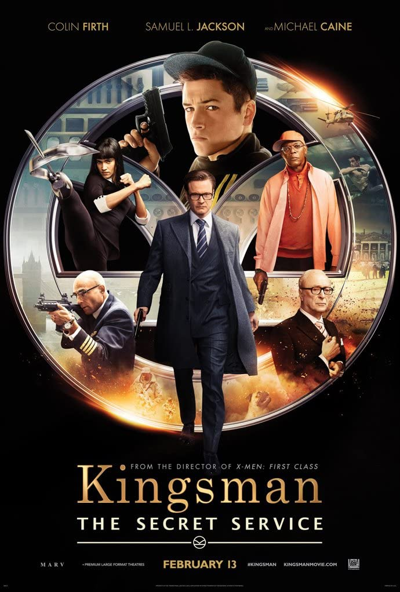

우리가 환영하는 B급, 킹스맨
줄거리
세상에서 가장 위험한 면접이 시작된다!
높은 IQ, 주니어 체조대회 2년 연속 우승!
그러나 학교 중퇴, 해병대 중도 하차.
동네 패싸움에 직장은 가져본 적도 없이 별볼일 없는 루저로 낙인 찍혔던 ‘그’가‘젠틀맨 스파이’로 전격 스카우트 됐다!
전설적 베테랑 요원 해리 하트(콜린 퍼스)는 경찰서에 구치된 에그시(태런 애거튼)를 구제한다.
탁월한 잠재력을 알아본 그는 에그시를 전설적 국제 비밀정보기구 ‘킹스맨’ 면접에 참여시킨다.
아버지 또한 ‘킹스맨’의 촉망 받는 요원이었으나 해리 하트를 살리기 위해 죽었다는 사실을 알게 된 에그시.
목숨을 앗아갈 만큼 위험천만한 훈련을 통과해야 하는 킹스맨 후보들.
최종 멤버 발탁을 눈 앞에 둔 에그시는 최고의 악당 발렌타인(사무엘 L. 잭슨)을 마주하게 되는데…